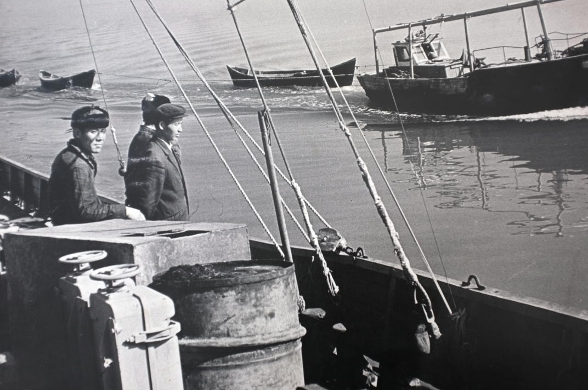
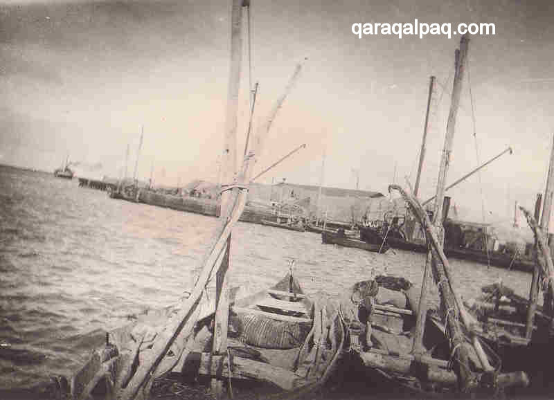
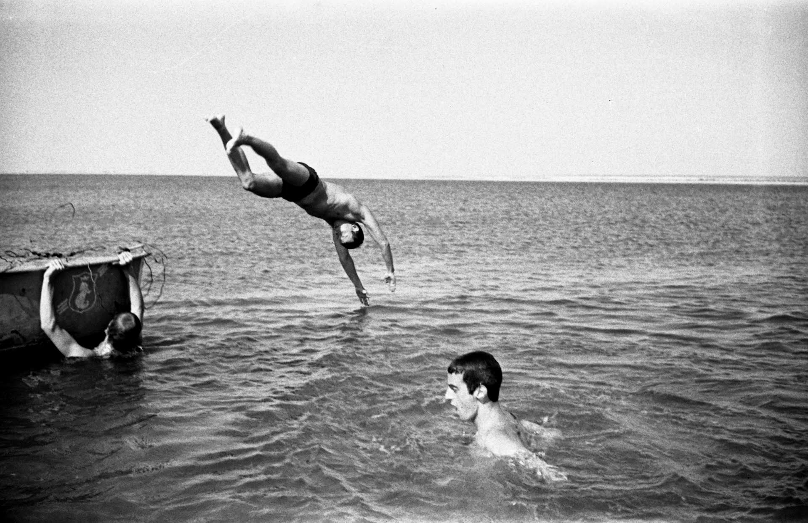

Once upon a time there was a wonderful sea on the border areas of Kazakhstan, Uzbekistan and Turkmenistan. The sea was fed by two rich streams; the Amu Darja from the South and the Sir Darja from the East. It's area was 68.000 square kilometers, and with that, was it the world's fourth biggest salt lake.
The sea had a unique, rich wildlife. 30.000 people menaged to make a livelihood from fishing on that sea and by working in the related processing industry. It's water was sailed by 113 fishing boats and it gave the Sovjet Union, 1/6 of their fish production.
| Pictures | |
|---|---|
|  |  |
|  | |